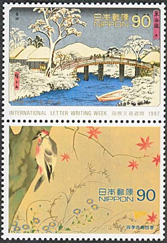
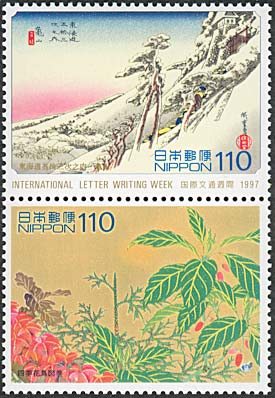
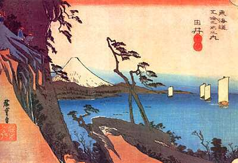
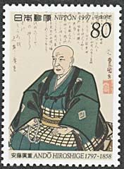
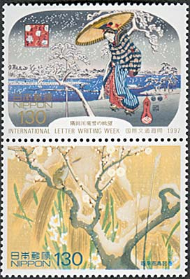
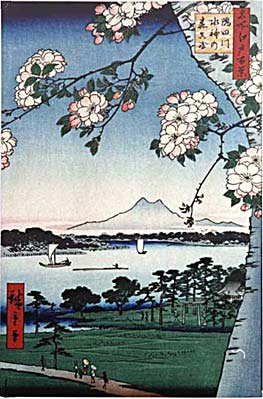
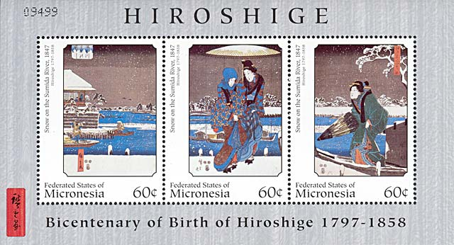

|
Landscapes by Hiroshige Ando |
|
|
Landscapes by Hiroshige Ando |
|
Hiroshige is usually connected with landscape
and nature prints. Together with Hokusai he is considered as the dominant
figure of printmaking in the first half of the nineteenth century.
Ando Hiroshige was born under the name of Ando Tokutaro
in Edo (Tokyo) as the son of a samurai and fireman. At the age of twelve,
both his parents died. Two years later, in 1811, the young Hiroshige got the
chance to join the famous Utagawa painting school. At that time, the ukiyo-e
master Toyohiro Utagawa was the head of the studio. In 1812 he was formally
allowed to take the name name of his master, and from then on he called
himself Utagawa Hiroshige. In the ukiyo-e literature he is usually
referenced as Hiroshige Ando.
The first work by Utagawa Hiroshige was a book
illustration published in 1818, when he was 21 years old. Until 1830,
Hiroshige created prints in the traditional style learned from his master
Toyohiro Utagawa. His early commissions were book illustrations. Typical
subjects out of that time are kabuki actors prints, beautiful women and a
few warrior prints.
From 1830 on, Hiroshige Utagawa tried his luck with a
new genre - landscape prints. One of his great masterpieces is the series
Tokaido gojusan-tsugi no uchi created from 1833 to 1834 with 55 Hiroshige
prints in oban format. In the literature you will find slightly varying
English translations like Fifty-three Stages of the Tokaido or From the
Fifty-three Stations of the Tokaido.
The Tokaido was a coastal highway connecting Edo with Kyoto,
the residence of the emperor. The stations must be imagined as a kind of
turn-pikes where tolls had to be paid. The stations had lodges and simple
restaurants where travelers could spend the night and get a meal.
The Fifty-three Stations of the Tokaido became the basis of
Hiroshige's fame and commercial success. His work deeply influenced some
modern European painters, among them van Gogh.
(After:
http://www.artelino.com/articles/hiroshige.asp)
|
 |
 |
The six double stamps presented on this page were issued by the Japanese PA on the 6th of November 1997, as part of the traditional International Letter Writing Series. They commemorate the artist's bicentenary of birth.
The value of 90 yen reproduces the work Hodogaya, "53 Stations of Tokaido". The entire design realistically conveys the dark and huge zelkova and a cool water surface, that imparts the melancholy one may feel on journey. Collection of Ohta Memorial Museum of Arts.
The value of 110 yen shows the work Kameyama, "53 Stations of Tokaido". Collection of Ohta Memorial Museum of Arts. The design depicts a parade of men and horses walking up a steep slope on a snow-covered early morning. The diagonal lines are specific to Hiroshige's art. This painting is considered a masterpiece of the Japanese classical art.
|
 |
 |
See above a landscape from the same series of "53 stations of Tokaido", this time depicting a summer scene. The above portrait of Hiroshige appeared on 4th of November 1997. It is a work of the Japanese painter Toyokuni III.
|
 |
 |
The third stamps of the set is part of the Edo Scenic Sites: Snow, Moon and Flower series, "Snow view of the Sumida River Revetment. A woman who walks bent forward on the snow is said to be the attitude of a beautiful woman characteristically drawn by Hiroshige Ando. The calm movement of the falling snow, rafts man and woman are dexterously expressed in the design. Collection of Tokyo National Museum. Above on the right we show a spring painting of the Sumida River. The stamps found under the works of Hiroshige reproduce paintings by Hoitsu Sakai. They were taken from the two volumes of "Flowers and bird pictorials of the Four Seasons. The paintings are dexterously drawn with fine lines that have been effectively depicted along with the vivid beautiful coloring that creates a vibrant and lively rhythm. Source: Japanese P.A.

The above miniature sheet was issued by the Federated States of Micronesia in 1997.It shows three prints from the same Snow on the Sumida River Series, published by Hiroshige in 1847.
Link: another page dedicated to Hiroshige, found on this site.
| Published:
03/27/2004. Revised:
03/27/04. Copyright © 2004 by Victor Manta, Switzerland. All rights reserved worldwide. |
|